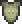
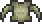

Bone Serpent
| Drops | |
|---|---|
| Coins: | 12 |
| Bone Serpent | |
|---|---|
| | |
| Statistics | |
| Type | Undead Enemy Burrowing Enemy |
| Environment | The Underworld |
| AI Type | Worm |
Bone Serpents are the strongest non-boss, non-hardmode burrowing enemies. They follow the Worm AI. Bone Serpents, like all other worms, are immune to lava.
The best way of killing one is the same as killing any other worm, by using weapons that can hit multiple enemies simultaneously like the Blade of Grass or a flail. When fighting them it is recommended to have a lot of potions, end game armor and weapons to be able to stay alive for extensive periods of time. They may also rise out of The Underworld into the cavern layer during night time and their spawn rate is increased.
Bone Serpents are immune to the Poisoned and the On Fire! debuffs.
Drops
Each segment of a Bone Serpent (14-20 in total) can drop loot; however, since they are usually defeated by destroying only one section of their bodies, only one segment will drop items. Causing a large amount of damage to multiple body sections at once with Explosives will result in potential loot from every destroyed segment. This can drastically increase the money gained from a single Bone Serpent.
Segments
| Bone Serpent Tail | |
|---|---|
|  | |
| Statistics | |
| Damage | 20 |
| Max Life | 250 (shared) |
| Defense | 18 |
| Bone Serpent Body | |
|---|---|
|  | |
| Statistics | |
| Damage | 30 |
| Max Life | 250 (shared) |
| Defense | 12 |
| Bone Serpent Head | |
|---|---|
| | |
| Statistics | |
| Damage | 40 |
| Max Life | 250 (shared) |
| Defense | 10 |
History
- 1.0.6:
- No longer drops Sunfury and Flamelash, which are found in Shadow Chests instead.
- Bone Serpents were given a new death sound.
- Their hit-box has been recalibrated.
- Pre-Release: Introduced.
| Worms |
|---|
| Bone Serpent Digger Devourer Giant Worm Leech World Feeder Wyvern Eater of Worlds The Destroyer |